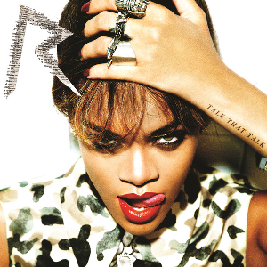
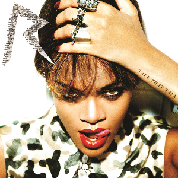
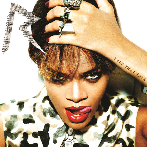

El inglés se ha convertido en el idioma principal de la música pop a nivel mundial. Aunque el pop es un género que se escucha en muchos países y se canta en diferentes lenguas, el inglés domina en gran parte de las canciones más populares. Esto se debe, en parte, a la gran influencia que tienen los artistas de países de habla inglesa, especialmente de Estados Unidos y el Reino Unido.
El inglés es considerado el idioma internacional por excelencia, lo que permite que las canciones lleguen a audiencias más amplias alrededor del mundo.
Las canciones en inglés suelen tener más oportunidades de entrar en listas internacionales, radios globales y plataformas como Spotify, Apple Music y TikTok.
Las canciones en inglés tienen más presencia en programas de televisión, películas, videojuegos y anuncios publicitarios globales.
Rihanna, cuyo nombre real es Robyn Rihanna Fenty, nació el 20 de febrero de 1988 en Barbados, una isla del Caribe. Desde pequeña mostró interés por la música y comenzó a cantar en su escuela. A los 16 años, fue descubierta por un productor musical que la llevó a Estados Unidos, donde firmó contrato con el rapero Jay-Z y su sello discográfico. Además de ser cantante, Rihanna es actriz, diseñadora de moda y empresaria. Ha creado su propia marca de cosméticos (Fenty Beauty) y ropa (Savage x Fenty), convirtiéndose en una de las mujeres más influyentes del mundo.

Girl Like Me
Loud
Talk That Talk